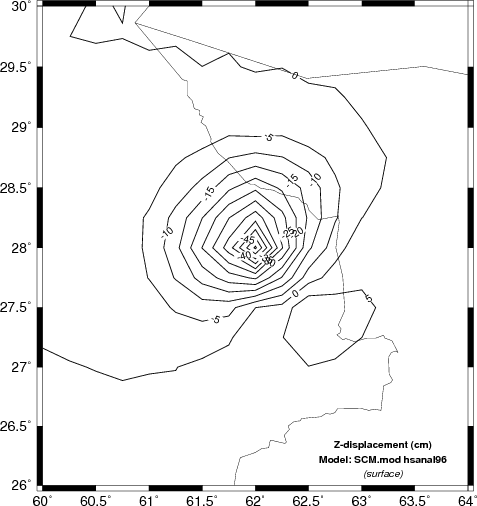
The USGS NEIC provides Finite Fault Models for larger earthquakes. An example of this was once at http://earthquake.usgs.gov/earthquakes/eqinthenews/2012/usc000cfsd/finite_fault.php, but this link has been superseded by another presentation.
This tutorial shows how to use the Computer Programs in
Seismology codes to compute the static deformation for a given
finite fault model.
The solution for static deformation in a wholespace, halfspace and a layer isotropic media are given in the file static.pdf.
Two program are used: hsanal96 and hstat96. The
first is used for the special problem of an observation point
anywhere within an isotropic halfspace or at the surface of an
isotropic halfspace. The program is an implementation of the
close-form solutions given in the PDF document. The second
program, hstat96, is much more general and will permit a
source and observation point anywhere within a stack of isotropic
layers with boundary conditions of halfspace, free or rigid at the
top and bottom interfaces. hstat96 is essentially the
limiting case of hspec96 as angular frequency goes to
zero. Because of its generality, the execution time of hstat96
is greater because of the multiplication of propagator matrices and
the numerical integration over wavenumber.
The sequence of running these two programs is as simple as
running hspec96:
prep96 -M ${MODEL} -d dfile -ALL -HS ${EVDP} -HR 0 -TF -BH
hsanal96
hprep96 -M ${MODEL} -d dfile -ALL -HS ${EVDP} -HR 0 -TF -BH
hstat96
which is the same sequence as for running hspec96.
There are two differences though. First the hspec96 creates
the output file hspec96.grn which is then convolved with the source
time function to create the ASCII file in the file96 format, e.g.,
hpulse96 -p -V -l 1 > file96
Since the static deformation is just a single point, the hstat96
and hsanal96 directly create an output named file96.
The other difference is that both programs accept a -V command
line flag. The interesting part of the output is the following:
| hsanal96 |
TSTATIC: 1 ZDD 1 -1.41254714E-06 TSTATIC: 2 RDD 2 -2.82509382E-06 TSTATIC: 3 ZDS 3 -4.84096199E-06 TSTATIC: 4 RDS 4 -9.68192307E-06 TSTATIC: 5 TDS 13 -1.31267000E-13 TSTATIC: 6 ZSS 5 2.73420915E-06 TSTATIC: 7 RSS 6 9.77280888E-06 TSTATIC: 8 TSS 14 -1.92498214E-06 TSTATIC: 9 ZEX 7 2.01586749E-06 TSTATIC: 10 REX 8 4.03173499E-06 TSTATIC: 11 ZVF 9 -1.71420732E-04 TSTATIC: 12 RVF 10 -7.14882117E-05 TSTATIC: 13 ZHF 11 9.19448121E-06 TSTATIC: 14 RHF 12 1.97109504E-04 TSTATIC: 15 THF 15 -1.35676630E-04 |
| hstat96 |
HSTATIC: 1 ZDD 1 -1.41254611E-06 HSTATIC: 2 RDD 2 -2.82509268E-06 HSTATIC: 3 ZDS 3 -4.84096336E-06 HSTATIC: 4 RDS 4 -9.68191762E-06 HSTATIC: 5 TDS 13 1.58707737E-13 HSTATIC: 6 ZSS 5 2.73421119E-06 HSTATIC: 7 RSS 6 9.77280979E-06 HSTATIC: 8 TSS 14 -1.92498396E-06 HSTATIC: 9 ZEX 7 2.01586795E-06 HSTATIC: 10 REX 8 4.03173590E-06 HSTATIC: 11 ZVF 9 -1.71379419E-04 HSTATIC: 12 RVF 10 -7.14995622E-05 HSTATIC: 13 ZHF 11 9.18313890E-06 HSTATIC: 14 RHF 12 1.97061323E-04 HSTATIC: 15 THF 15 -1.35628448E-04 |
The purpose of this output is to compare the analytic results on the
left to the numerical integration results on the right for each of
the basic Greens functions. This test case was for a source at a
depth of 20 km, a receiver at the surface and a distance of 20 km
for a halfspace model with Vp=6.15 km/s, Vs=3.55 km/s and density
2.8 gm/cc.
To run the simulations, you will need the following:
Unpack the DOSTATIC.tgz using the commands:
gunzip -c DOSTATIC.tgz | tar xvf -
This will create the following directory structure:
STATIC_TEST-|
|-FINITE_1
|
|-FINITE_2
|
|-FINITE_3
|
|-FINITE_4
In each sub-directory there will be an executable shell script named DOIT. This shell script computes the static deformation of a finite fault model and then plots a contour map.
The individual test cases differ in the following way:
These cases test the code and also investigate the sensitivity of the permanent displacements to the velocity model used.
Each of the directories that are unpacked contain a script named
DOIT. Follow the link to an annotated discussion of
the script DOIT.
The example uses the finite fault solution for the M7.7
- 83km E of Khash, Iran (2013-04-16 10:44:20 UTC) earthquake.
We use the "Subfault Format" as the data file for the simulation.
The following three figures present the finite fault solution
(left) and the projection of the slip distribution onto topography
(center) and INSAR image (right).
| 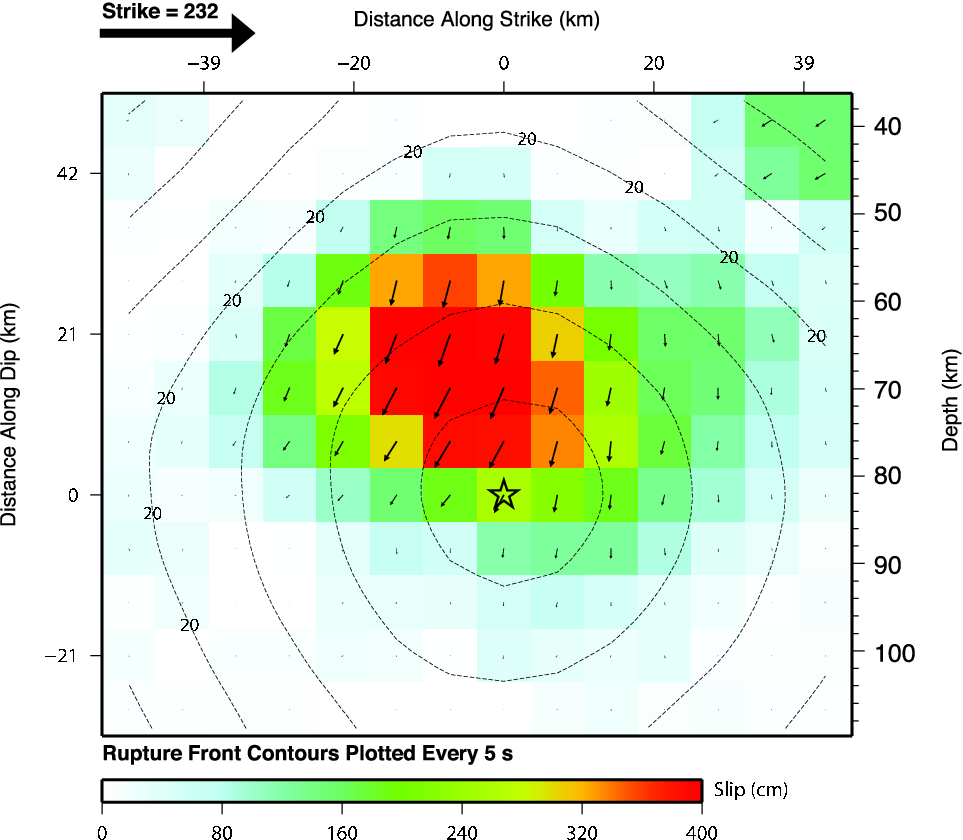 | 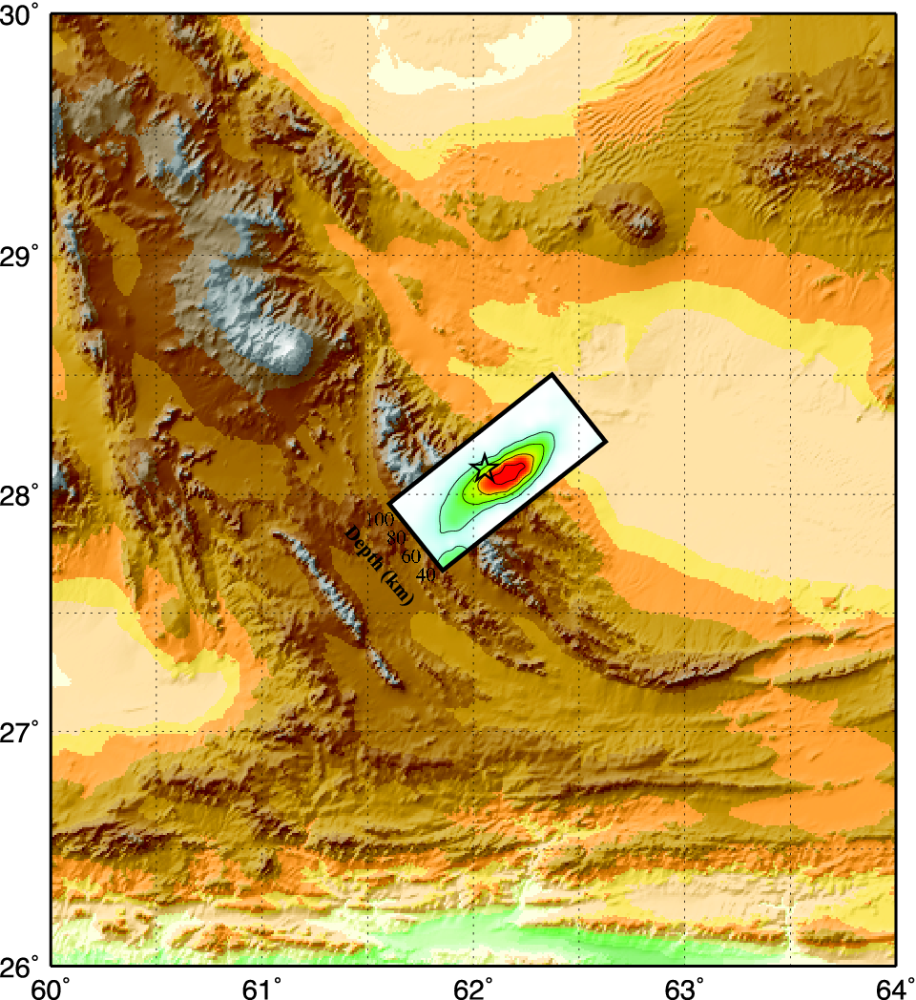 | 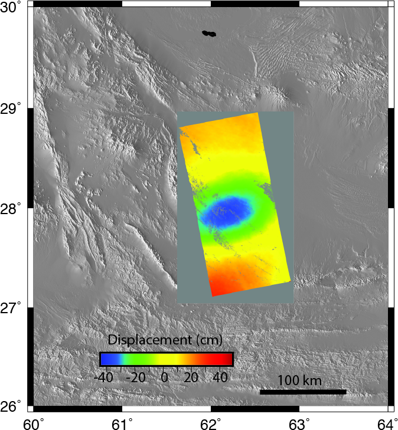 |
The first test is whether the hstat96 give the same
results as hsanal96 for a halfspace. Only the Z component
predictions are compared. We will compare the results of using the
GMT commands surface and xyz2grd. The shell script
uses a finer sampling for surface.
|
Vertical deformation (cm) for the halfspace
model. The left shows the result of using the
analytic solution hsanal96 while
the right column gives the solution using the propagator
matrices and numerical wavenumber integration using
hstat96. The results are
identical. The upper and lower panels compare the
xyz2grd and surface output respectively.
Because the grid sampling interval was 0.25 degrees in
latitude and longitude, for a 17 x 17 grid, the two
plots are very similar. |
|
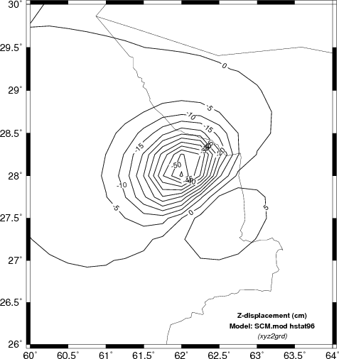 |
|
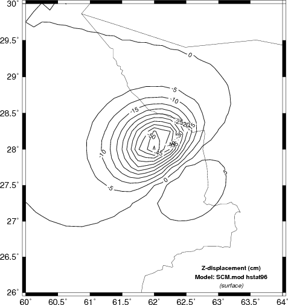 |
|
To see the effect of sampling and the difference between the xyz2grd
and surface output compare the following two figures
to those above. In this case the grid interval in latitude
and longitude was 0.5 degrees, which yielded a 9x9 grid. The
program surface smooths to a 0.25 degree grid. The
difference in computational effort is roughly a factor of 4, e.g.,
(17x17)/(9x9), the number of grid locations.
| Vertical
deformation (cm) determined using a coarser sampling grid |
|
| |
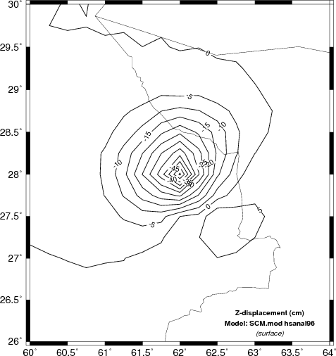 |
The second test is to investigate the sensitivity of the finite fault solution to the velocity model used.
Here we will compare the computed displacements in the N (north) E
(east) and Z (up directions). In the case of the Z comparison
we are able to compare the results to INSAR estimates.
| Comparison of vertical component deformation (cm) for the SCM, WUS and upper AK135 velocity models. These are compared to the INSAR image of the source region. Note that the maximum deformation for the synthetics seems to be about 10 km to the northwest of the depression indicated by the INSAR image. This offset is on the order of the teleseismic location error. The SCM model produces the largest surface displacements since the S-wave velocity at the source depth is much lower than for the other two models. | |
` |
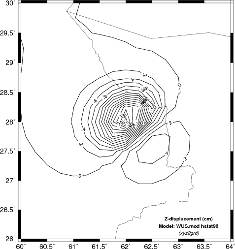 ` |
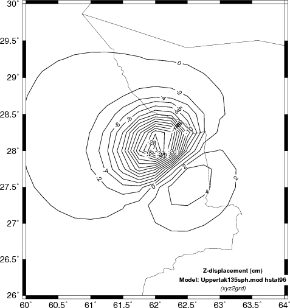 ` |
|
|
Comparison of north component
deformation (cm) for the SCM, WUS and upper AK135
velocity models.
|
|
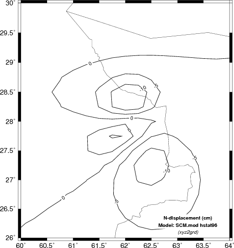 |
 |
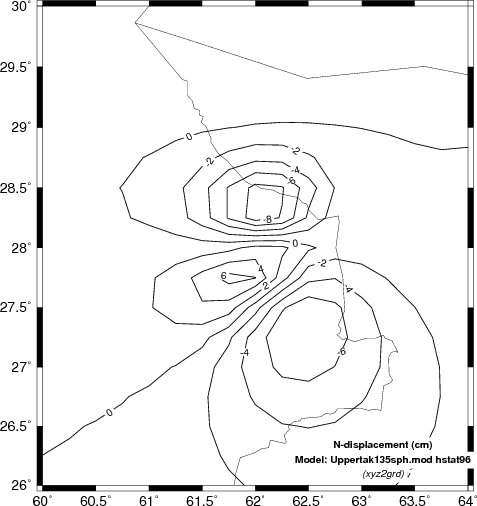 |
|
|
Comparison of east component
deformation (cm) for the SCM, WUS and upper AK135
velocity models.
|
|
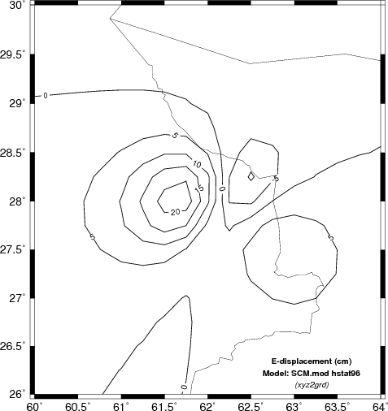 |
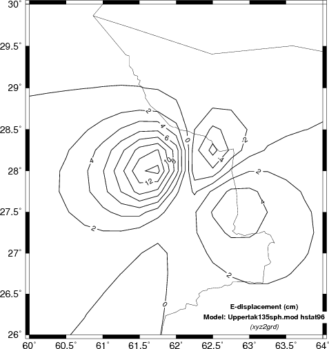 |
The obvious difference among the predicted static displacements as a function of the velocity models is that the simple halfspace model predicts the highest amplitudes. This is not surprising since the theoretical amplitude is a function of the ratio (seismic moment)/rigidity. The velocity at the source depth in the simple model is the least, and hence the predicted amplitudes are the greatest.
Since we are discussing the static deformation due to a rupturing finite fault, an interesting question concerns how the static deformation builds or when has the final static offset been achieved. As an approximation we assume here that the static offset is coincident with the first S-wave arrival. The link compares this assumption to a simulation that scales, shifts and adds complete regional seismograms. Comparison of displacement time histories.
Hopefully there may be some value in this presentation in addition to demonstrating how this can be done using these codes.
Avinash Nayak found an error in this documentation.